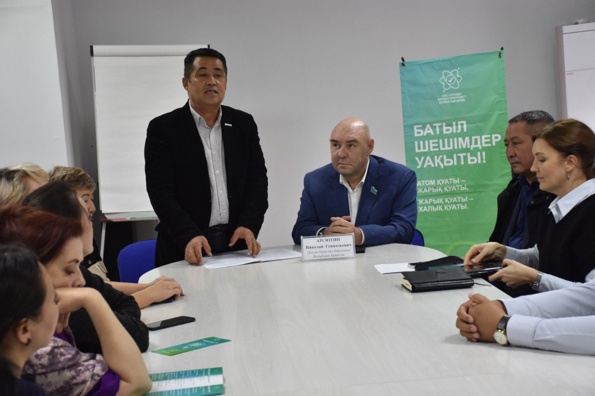
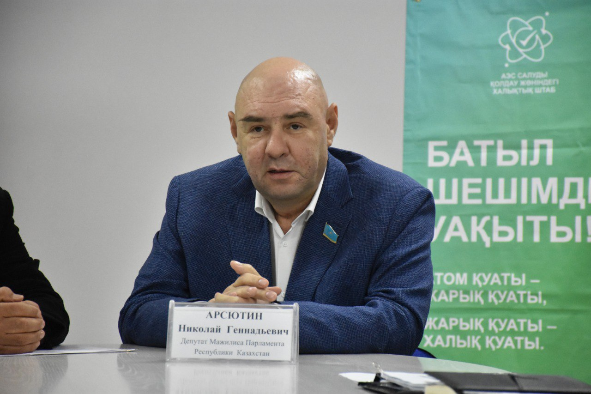
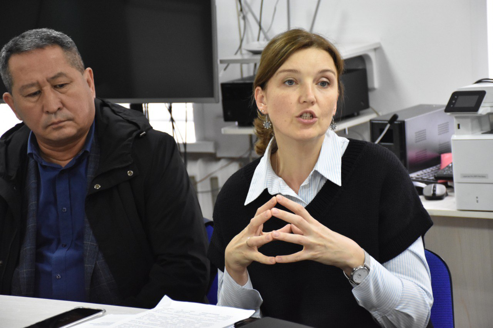

27 Қыркүйек 2024
Спикерлер АЭС-тің ел экономикасындағы экологиялық таза энергияның сенімді көзі ретіндегі маңызды рөлін атап өтті. Көміртегі негізіндегі энергия көздеріне тәуелділікті төмендету есебінен қоршаған ортаға оң әсерін егжей-тегжейлі түсіндірді.
Халық штабы мүшелерінің айтуынша, біздің энергиямыздың 70 пайызы көмір электр станцияларында өндіріледі. Олардың бәрі тозған. Бұдан басқа, көмір электр станциялары қоршаған ортаға зиян келтіреді. Мысалы, бір ГБ энергия өндіретін осындай бір электр станциясы 3-7 миллион тонна көмірқышқыл газын және 300 мың тонна күл шығарады. Оларда зиянды қосылыстар да бар. Атом электр станциясын салу көмір генерациясын пайдалануды едәуір қысқартуға мүмкіндік береді, бұл қалалардағы ауаның тазалығын қамтамасыз етеді.
Қазақстанда АЭС салу үшін ғылыми-техникалық база мен қажетті кадрлық әлеует бар. Атап айтқанда, Алматы орталығында қуаттылығы аз реактор 60 жыл бойы табысты жұмыс істеп келеді, онда 700-ден астам адам еңбек етеді. Медицинадан өнеркәсіпке дейінгі түрлі бағыттар бойынша зерттеулер жүргізілуде. Барлық жұмыстар МАГАТЭ тарапынан тікелей бақылауда жүргізіледі. Осының барлығы АЭС құрылысында пайдаланылатын болады.
#халықштабыаэссалғаныүшін #аэсреферендум
